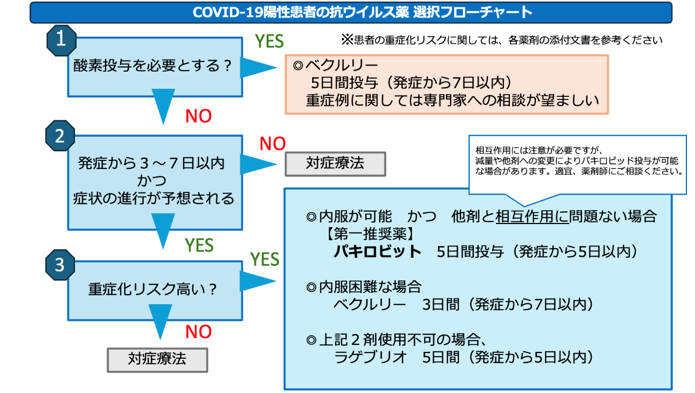
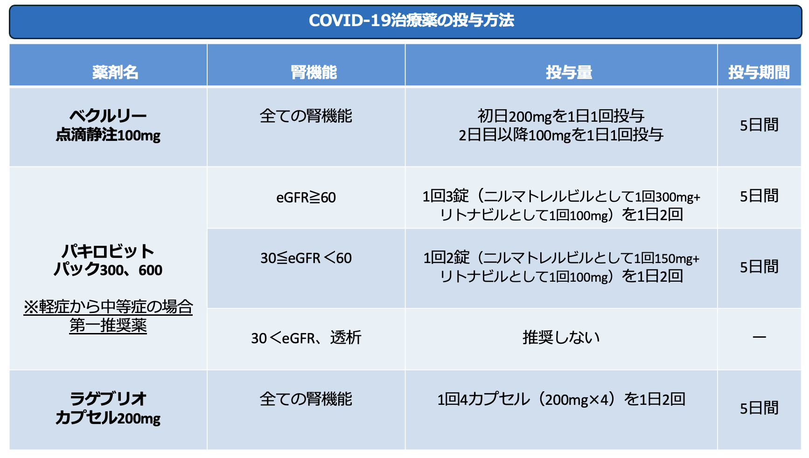
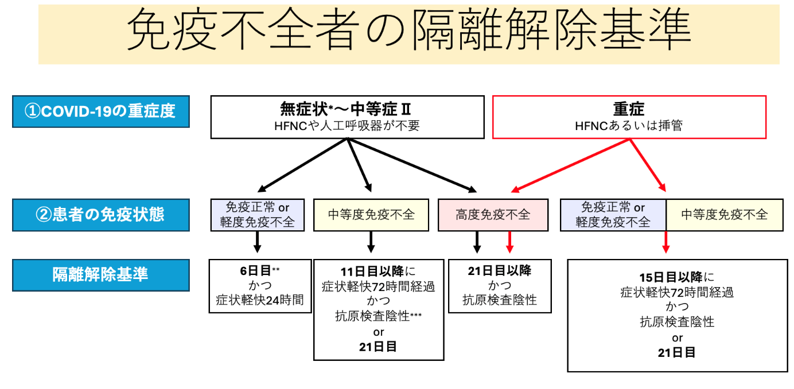

Ⅴ. 疾患別感染対策 9. 新型コロナウイルス感染症
- 臨床
- 病原体: COVID-19の原因ウイルスであるSARS-CoV-2は、コロナウイルス科ベータコロナウイルス属に分類される一本鎖RNAウイルス。2024年4月現在、オミクロン株とその亜系統および組換え体が世界的に流行している。
- 潜伏期間: COVID-19（オミクロン株）の潜伏期間は一般的に2〜7日（中央値2〜3日）とされている。
- 症状: 主な症状は、発熱、咳嗽、咽頭痛、鼻汁・鼻閉、頭痛、倦怠感など。オミクロン株が主流になって以降、嗅覚・味覚障害の頻度は減少している。重症化のリスク因子を有する患者では、病状が急速に進行する可能性があるため、注意が必要である。
- 疫学: 日本では2020年1月に初めて感染者が確認され、その後複数の流行波を経験した。2023年5月8日よりCOVID-19は5類感染症に変更された。
- 感染様式: 主な感染経路は飛沫感染と接触感染であり、エアロゾルによる空気感染も示唆されている
- 感染期間: 感染者は発症2日前から発症後5〜10日間程度、ウイルスを排出することで感染性を有すると考えられている。
- 検査診断: COVID-19の診断には、核酸検出検査（PCR、LAMP等）または抗原検査が用いられる。オミクロン株流行下では、抗原定性検査キットの感度が低下している点に注意が必要である、
- 診療
- 患者発生時の対応
- 診療
新型コロナウイルス感染症を疑う症状（発熱、咳嗽、呼吸困難など）がある患者は速やかに検査を実施する。感染が確定した患者は、個室隔離行った上で、標準予防策、接触感染予防策、飛沫感染予防策、空気感染対策（エアロゾル発生手技実施時）を実施する。
患者が入院後発生（入院後2日以上経過）の場合、平日日中は感染制御部（内線5093）、夜間休日は事務当直経由にて感染制御部に連絡をする。
- 入院患者の有症状時の検査
検査法：抗原定量検査、検査材料：鼻咽頭または唾液とし、検体検査画面よりオーダーを行う。
- 患者が濃厚接触者となった場合の対応について。
- 濃厚接触となる基準
- 患者が濃厚接触者となった場合の対応について。
- 発端者の発症からさかのぼって2日前より以下の接触があった。
- 発端者とマスク無しで１ｍ以内、15分以上の会話や接触があった場合
- 食事や睡眠時の生活空間を長時間（８時間以上）共有していれば、濃厚接触となる。例）総室患者が発症した場合、８時間以上同室した患者は濃厚接触となる。
- 感染対策
- 患者の収容
- 感染対策
新型コロナウイルス感染症を疑う患者、または陽性確定患者の収容は、個室病室で行う。患者数の増加により、個室単位での隔離が困難な場合はコホート管理を行う。
- 個人防護具
個人防護具は、患者の身体状態や患者に接する状況に応じて、選択する。
- その他
器材・食器の取り扱い、カーテン、病院リネンの取り扱い、廃棄物の処理については、標準予防策の項を参照する。
日常清掃、退院時清掃の方法については、
Ⅱ.隔離予防策>2．感染経路別予防策>（２）各経路別感染予防策の実施方法>１）接触感染＞③接触感染予防策＞◆清掃
の項を参照する。

COVID-19陽性入院患者の治療
※患者の重症化リスクに関しては、各薬剤の添付文書を参考ください

なお、COVID-19の診療や薬剤選択に迷う場合は感染症内科、相互作用等の薬剤のご相談は薬剤師へ
ご相談ください。
6) 隔離解除基準について
COVID-19患者の隔離期間は①COVID-19の重症度と②患者の免疫状態で決まる。
軽症且つ下記に示す免疫不全がない場合は、発症日を0日として6日目に隔離解除となる。
免疫を低下させる疾患や薬剤使用のある患者は表1を参照し、軽度、中等度、高度の免疫不全のいずれに相当するかを確認する。抗がん剤、生物学的製剤、免疫抑制剤、ステロイド使用中は基本的には、中等度免疫不全として扱うが、薬剤の種類や投与量により一部軽度や高度に分類する。
軽度であれば、免疫不全のないものと同様の隔離期間とする。隔離期間は表2の通りとする。
表1 免疫抑制の程度
表2 免疫不全者の隔離解除基準

- 職員対応
- 有症状時
- 職員対応
新型コロナウイルス感染症を疑う症状（発熱、咳嗽、呼吸困難など）が24時間以上持続した場合、近医にて受診して検査を受ける。
- 就業制限期間
新型コロナウイルス感染症と診断されたら、発症日を0日目として、5日間休職。症状消失し24時間経過していれば、6日目より復帰可能。
（無症状陽性の場合も同様に、検査陽性日を0日目として、5日間休職し、6日目より出勤可能）
- 事務手続き
マイハンダイ→安全衛生管理部ポータルサイトから登録
*勤務中に有症状となった場合には、すぐ帰宅し近医受診または自身で購入した抗原キットで新型コロナウイルス検査を行うのが原則である。但し、夜間・休日等で近医での受診が困難な場合は、院内検査を受けることも可能である。